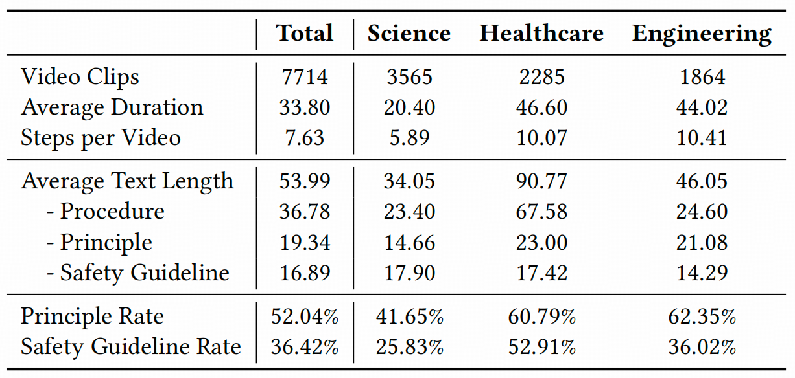
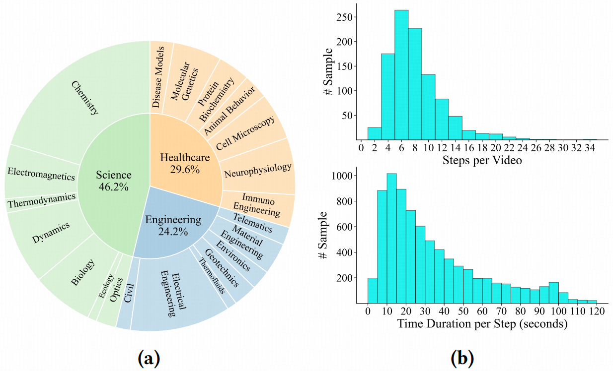
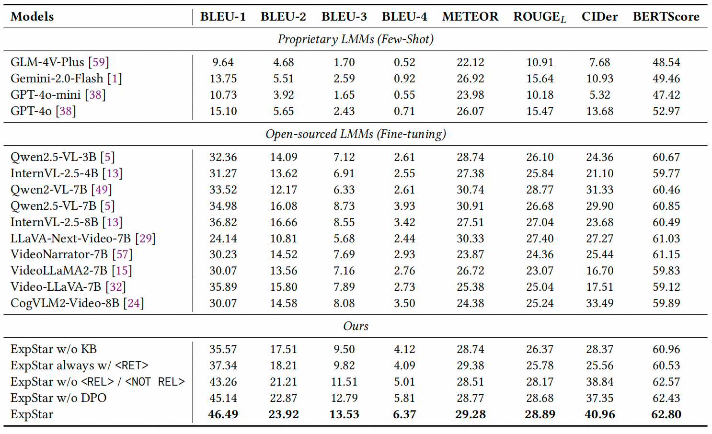
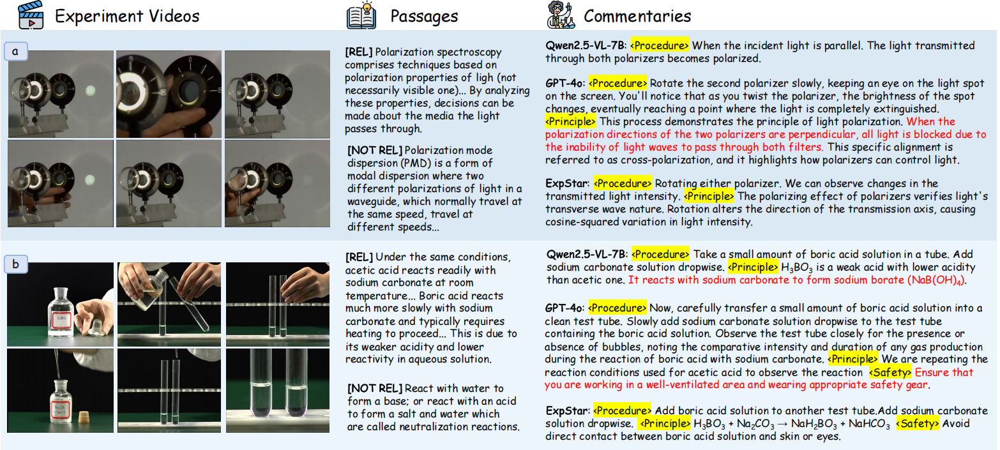

ExpInstruct Dataset


Method

Overview of Our Proposed ExpStar. It is built on the Qwen2.5-VL-7B architecture. Special control tokens are employed to guide the model’s behavior: <RET> and <NOT RET> determine whether retrieval is necessary, while <REL> and <NOT REL> evaluate the relevance of retrieved passages. The right three LMMs share parameters.
Experiments

Qualitative Results

Qualitative Results of Qwen-2.5-VL-7B, GPT-4o and our ExpStar. The red text denotes inappropriate generation